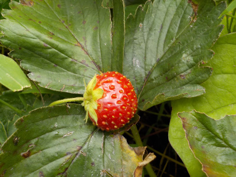
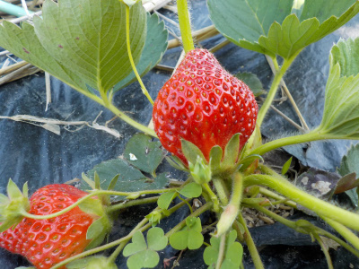
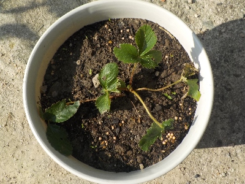
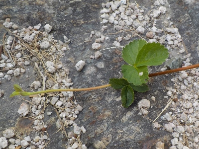
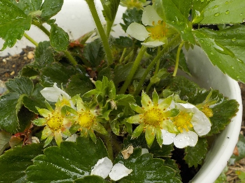

今頃のイチゴは濃厚な味でした。
更新日 : 2021/07/18

四季採れのイチゴじゃない普通のイチゴに実が出来ていました。なにげに四季なりじゃなくても夏にイチゴってできるんですよね。
食べてみたら濃厚な甘さでジャムっぽい味でした。
また見つけたら食べようと思います。
更新日 : 2021/07/18

四季採れのイチゴじゃない普通のイチゴに実が出来ていました。なにげに四季なりじゃなくても夏にイチゴってできるんですよね。
食べてみたら濃厚な甘さでジャムっぽい味でした。
また見つけたら食べようと思います。
更新日 : 2022/05/05

今日収獲したのは小粒が多かったですが、甘くて美味しかったです。
イチゴは畑に必要だって思いました。
更新日 : 2024/11/04

先日枯れたイチゴの代わりを畑から持ってきました。
畑はすぐに虫が寄って来るので、植木鉢で育てようかと思っています。これの調子が良かったら鉢の数を増やすつもりです。
更新日 : 2025/05/10

鉢植えの苺からランナーが出ました。
このランナーを使って苗を増やそうと思っています。苗が何本採れるでしょうね。
更新日 : 2026/04/19

この鉢のイチゴから、去年7株苗を採りました。たぶん古い株だと思ったので、イチゴは期待しないで今年も親株として使おうかと思っていましたが、意外と花が多く咲きました。
案外若い株かもしれないですね。
畑で管理しないで生き残ったイチゴなのでたぶん強い個体です。